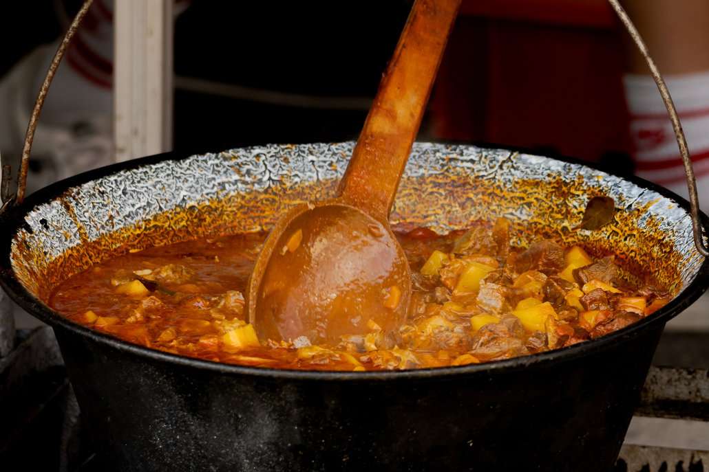

Goulash

Ingredients:
Meat
Onions
Carrots
Red Bell Peppers
Potatoes
Oil
Water
Paprika
Black Pepper
Salt
Steps:
Heat the oil up
Put onions and peppers in oil
Cook for 15 min
Put meat in
Cook 15 min
Put water and potatoes
Simmer 1h